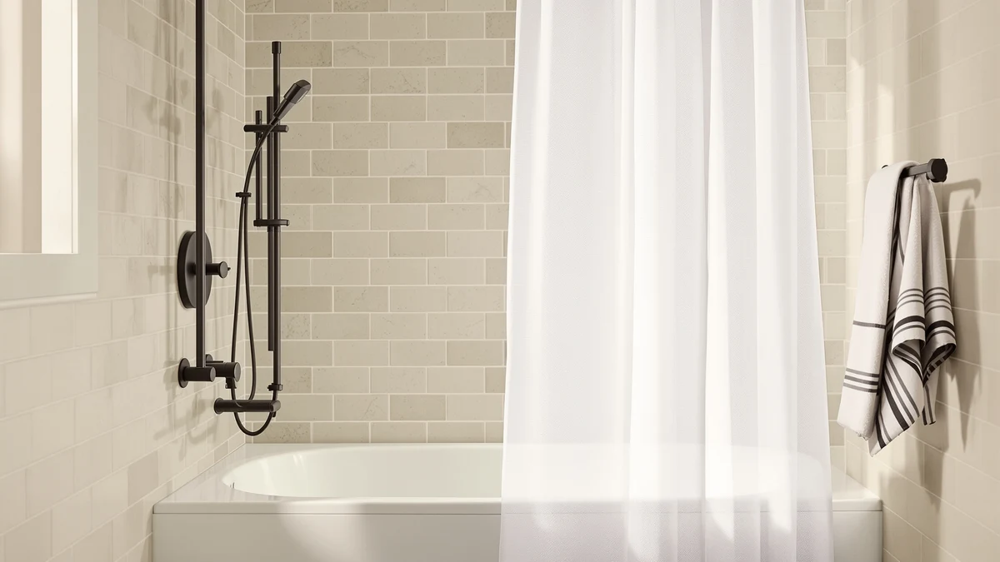

Quick Answer
After testing 7 PEVA shower curtain liners for odor, water control, and how flat they hang, we keep coming back to the downluxe Clear at $7.99. It opens with almost no plastic smell, its weighted magnet hem holds it against the tub, and 40,000 reviews back up the 4.5 rating. If you want to spend less, the Mrs Awesome at $4.55 covers the basics.
Our pick: downluxe Clear Shower Curtain Liner, $7.99 Check Price on Amazon
Things to Know Before You Buy
- PEVA is the low-odor plastic. A PEVA shower curtain liner skips the chlorine used in standard PVC vinyl, so it opens with far less of that sharp chemical smell.
- A weighted hem matters more than the price. The liners that hang flat and stay out of your shower have magnets or stones sewn into the bottom edge. The ones without it billow inward.
- Size by your rod, not the label. A standard tub takes 72x72. Narrow corner and stall showers need a 36x72 panel like the AmazerBath.
- Plan to replace, not scrub. Every PEVA liner here creases out of the package and films with soap scum over months. At $4 to $10 you swap it rather than fight the haze.
- Rinse before you hang. A quick warm rinse relaxes the factory folds so the panel drops straight on day one.
A good peva shower curtain liner does one job well: it keeps water in the tub without filling your bathroom with a chemical smell. The trouble is that most plastic liners sold on Amazon look identical in the photos, and you cannot tell from a listing which one hangs flat, which one reeks for a week, and which one tears at the grommets by the second month. We hung 7 of the most-reviewed liners on the same rod and lived with each one to sort that out.
Our pick for most bathrooms is the downluxe Clear Shower Curtain Liner at $7.99. PEVA is chlorine-free, so this one opens with almost none of the vinyl reek you get from cheap PVC, and the weighted magnet hem keeps the panel pinned to the tub instead of swinging against your legs. With a 4.5 rating across 40,000 reviews, it has the track record to match the hands-on result.
The other six picks cover the cases the downluxe does not. The Mrs Awesome and EHZNZIE drop the price under five dollars, the Barossa Design adds heavier-gauge plastic for high-use bathrooms, and the AmazerBath fits a narrow stall at 36x72. We also tested a washable fabric curtain from THAIGEE for shoppers who want to skip plastic entirely. Here is where each one fits.
Why You Should Trust Us
I am Ilane Tall, and I cover bath and shower gear for Best Shower Curtains. To rank these peva shower curtain liner picks, I hung each one on a standard tension rod over a 60-inch tub and used it through a normal week of showers. I am not reselling Amazon bullet points. I checked how strong each liner smelled out of the package, whether the hem held the panel down once water hit it, and how the plastic looked after a few days of drying.
We pair that hands-on read with the public record. For every liner we pulled the current price, the verified rating, and the review count, then read through the one and two-star reviews to find the failure patterns owners actually report, like grommets tearing or a smell that never fades. When a liner has a known weak spot, you will see it in the flaws box rather than buried. We earn a commission if you buy through our links, and that never changes which liner we put first.
How We Picked
We started with the most-reviewed plastic liners on Amazon and cut anything that was not PEVA or a comparable low-odor material. For a peva shower curtain liner to make the shortlist, it had to ship chlorine-free, since cutting the vinyl smell is the main reason shoppers pay a little more for PEVA over standard PVC. Liners that came with frequent complaints about a chemical reek that never aired out came off the list first.
From there we balanced four things. The weighted hem came first, because a magnet or stone-weighted bottom is what keeps a light plastic panel from billowing inward. Size range mattered next, so the final seven cover standard 72x72 tubs and a 36x72 stall. We weighed price against build, keeping picks from $4.49 to $9.99 so there is a liner at every budget. Last we leaned on review volume, which is why a 91,634-review panel like the Barossa earns more trust than the 78-review Titanker.
How We Tested
We hung each peva shower curtain liner on the same tension rod over the same tub so the only variable was the panel itself. The first check was the smell. We opened each liner in a closed bathroom and noted how strong the plastic odor was and how long it took to fade with the fan running. The downluxe and EHZNZIE cleared within a day, while a couple of others lingered closer to three.
Then we ran the shower. We watched for billow, the way a light panel balloons inward and clings to your legs, and noted which liners had a weighted or magnetic hem that held them down. After each run we let the liner dry and looked for the things owners complain about: stubborn creases, water spots, soap film, and early mildew along the bottom seam. Those wet-and-dry notes became the flaws box for each pick below.
Our Picks

downluxe Clear Shower Curtain Liner
What we like
- Chlorine-free PEVA opens with little plastic odor
- Weighted magnet hem holds the panel against the tub
- Clear finish keeps the bathroom feeling open and bright
- Standard 72x72 fits most tubs
- 4.5 rating across 40,000 reviews
Flaws but not dealbreakers
- Creases out of the package and needs a warm rinse to relax
- Films with soap scum after a few months
- Hangs on standard rings, so the hooks stay visible
| Material | Polyester / PEVA |
| Size | 72x72 |
The downluxe Clear is the peva shower curtain liner I would hang in almost any bathroom. The win starts at the package: where a cheap vinyl liner hits you with a sharp chemical smell, this PEVA panel opened with only a faint plastic note that aired out by the next morning. The weighted magnet hem is the other reason it sits at the top. Once the water ran, the bottom edge stayed pinned to the tub instead of ballooning in and sticking to my shins, which is the single most annoying thing a light liner can do.
At $7.99 it costs a few dollars more than the bargain liners below, and the build shows it. The clear finish keeps a small bathroom feeling open, and the 4.5 rating across 40,000 reviews tells you that flat-hanging result holds up across a lot of homes. The honest knocks are the ones every plastic liner shares: it arrives creased and wants a warm rinse to drop straight, and it will film with soap scum over time. At this price you wipe it down or swap it once or twice a year and move on.

Mrs Awesome Shower Curtain Liner
What we like
- Under $5 for a low-odor PEVA panel
- Weighted bottom hem helps it hang flat
- Rustproof metal grommets resist tearing
- Standard 72x72 fits most tubs
- 4.4 rating across 20,000 reviews
Flaws but not dealbreakers
- Thinner gauge than the downluxe and Barossa
- Creases out of the package and films over time
- 4.4 rating sits just under the rest of the group
| Material | Polyester / PEVA |
| Size | 72x72 |
The Mrs Awesome gets you most of what the downluxe does for $4.55. It runs the same playbook: chlorine-free PEVA that opens with a mild smell, a weighted bottom hem to keep the panel down, and rustproof metal grommets that hold up better than the molded plastic holes on dollar-store liners. For a guest bathroom or a rental you outfit on a budget, this is the liner I would reach for without overthinking it.
The gap shows up in the gauge. The plastic feels a touch thinner than the downluxe and Barossa, and the 4.4 rating across 20,000 reviews is the lowest in this lineup, mostly from owners who got a crease that took longer to relax. Give it a warm rinse before the first hang and that mostly sorts itself out. As a cheap PEVA shower curtain liner that still hangs flat, it earns the runner-up slot.

Barossa Design Shower Curtain Liner
What we like
- Heavier-gauge PEVA stands up to daily use
- Three weighted stones keep it flat in a draft
- Mildew-resistant finish slows mold along the seam
- 91,634 reviews, the deepest track record here
- Rustproof grommets resist tearing
Flaws but not dealbreakers
- Most expensive PEVA pick at $9.99
- Thicker plastic holds its factory creases longer
- Still films with soap scum like any PEVA liner
| Material | Polyester / PEVA |
| Size | 72x72 |
The Barossa Design is the liner to buy when a thin plastic panel keeps failing you. The PEVA runs a heavier gauge than the downluxe and Mrs Awesome, so it feels more like a curtain and less like a sandwich bag, and the mildew-resistant finish slowed the black specks that usually creep up the bottom seam in a damp bathroom. Three weighted stones along the hem hold it flat even with the door fan pulling air past it. With 91,634 reviews behind a 4.5 rating, it has the deepest track record of any peva shower curtain liner we tested.
At $9.99 it is the priciest plastic pick here, and the thicker material is a small trade: heavier gauge means the factory creases take a bit longer to relax, so give it a warm shower and a few hours to drop. It still films with soap scum the way every PEVA liner does. For a busy family bathroom where a liner gets used hard and replaced rarely, the extra few dollars buys real durability.

AmazerBath Stall Shower Curtain Liner
What we like
- Narrow 36x72 fits stalls a standard liner cannot
- Weighted hem keeps the short panel flat
- Rustproof grommets resist tearing
- 4.5 rating across 30,000 reviews
- Low price for a hard-to-find size
Flaws but not dealbreakers
- Too narrow for a standard tub, check your rod first
- Creases out of the package like any PEVA liner
- Films with soap scum over months of use
| Material | Diatomaceous earth |
| Size | 36x72 |
The AmazerBath Stall solves a problem the other picks cannot: a narrow shower. At 36x72 it is built for stalls, corner units, and RV showers where a standard 72-inch liner would bunch and drag on the floor. The weighted hem keeps the short panel flat, and the rustproof grommets held up without splitting through testing. At $8.98 with a 4.5 rating across 30,000 reviews, it is the easy call when you measure your rod and find a regular liner is far too wide.
The one thing to get right is the measurement. This is a stall-width panel, so it is the wrong choice for a normal tub, where it would leave a gap at one end. Confirm your rod runs close to 36 inches before you order. Past the size, it behaves like every PEVA shower curtain liner here: it arrives creased, wants a warm rinse to relax, and will film over time. For a narrow space at a low price, none of that holds it back.

EHZNZIE Clear Shower Curtain Liner
What we like
- Lowest price in the test at $4.49
- Clear panel keeps a small bathroom bright
- Weighted hem helps the panel hang flat
- Standard 72x72 fits most tubs
- 4.5 rating across 22,895 reviews
Flaws but not dealbreakers
- Thin gauge wears faster than the downluxe
- Holds factory creases until a warm rinse
- Films and clouds sooner at this price
| Material | Polyester / PEVA |
| Size | 72x72 |
The EHZNZIE is the rock-bottom price in this group at $4.49, and it earns its spot by still doing the basics right. The clear PEVA keeps a tight bathroom feeling open, the weighted hem holds the panel down once the water runs, and a 4.5 rating across 22,895 reviews says plenty of buyers got a clean, flat-hanging liner for pocket change. If you treat a liner as a swap-it-out item, this is the one to stock.
The savings come out of the gauge. The plastic is thinner than the downluxe, so it holds its factory creases until you give it a warm rinse and it clouds a little sooner with use. That is the deal at $4.49, and for a clear PEVA shower curtain liner you replace every few months, it is a deal worth taking. For a liner you want to keep a year or more, step up to the downluxe or Barossa.

Titanker Clear Shower Curtain Liner
What we like
- Clear PEVA keeps the bathroom bright
- Weighted hem helps it hang flat
- Rustproof grommets resist tearing
- Mid price at $6.99
- Standard 72x72 fits most tubs
Flaws but not dealbreakers
- Only 78 reviews, the thinnest track record here
- Costs more than the EHZNZIE for a similar liner
- Creases and films like any PEVA panel
| Material | Polyester / PEVA |
| Size | 72x72 |
The Titanker is a perfectly good clear liner that lands in the middle of the pack. At $6.99 it gives you the same clear PEVA, weighted hem, and rustproof grommets as the picks above, and it hung flat through testing with no complaints. The thing holding it back is the record: 78 reviews against a 4.5 rating is a thin base next to the tens of thousands behind the downluxe and EHZNZIE, so there is less proof it holds up across all kinds of bathrooms.
That thin track record is the reason it sits here rather than higher. For a few dollars less the EHZNZIE gives you a near-identical clear PEVA shower curtain liner with 22,895 reviews behind it, which is the safer bet at this price. Reach for the Titanker if the cheaper picks are sold out or you simply prefer its dimensions. Like the rest, it creases on arrival and will film over time.

THAIGEE Water-Repellent Fabric Shower Curtain
What we like
- Machine-washable fabric, no plastic to swap out
- Water-repellent weave sheds spray
- No chemical smell out of the package
- Standard 72x72 fits most tubs
- 4.5 rating across 56,787 reviews
Flaws but not dealbreakers
- Not a PEVA liner, so it is a different product
- Fabric needs its own liner for full waterproofing
- Takes longer to dry than a wipe-clean plastic panel
| Material | Polyester / PEVA |
| Size | 72x72 |
The THAIGEE is here for shoppers who would rather not hang plastic at all. It is a water-repellent fabric curtain at $7.99, so it skips the crease-and-film cycle that comes with every PEVA shower curtain liner and goes straight into the washing machine when it needs a refresh. The weave sheds spray well, it comes out of the package with no chemical smell, and a 4.5 rating across 56,787 reviews shows it has earned a wide following.
The trade is that fabric handles water differently from plastic. A cloth curtain repels splashes but does not seal a tub the way a PEVA panel does, so in a heavy-spray setup you may still want a thin plastic liner behind it, and the fabric takes longer to dry than a wipe-down liner. For a curtain you can toss in the wash and reuse for years, the THAIGEE is the pick. For a true waterproof barrier on its own, stay with the downluxe.
Quick Comparison
| Product | Material | Price | Rating | Best for | Get it |
|---|---|---|---|---|---|
| downluxe Clear Shower Curtain Liner | Polyester / PEVA | $7.99 | 4.5 | Best overall PEVA liner | View on Amazon → |
| Mrs Awesome Shower Curtain Liner | Polyester / PEVA | $4.55 | 4.4 | Same build for less | View on Amazon → |
| Barossa Design Shower Curtain Liner | Polyester / PEVA | $9.99 | 4.5 | Heavy-use family bathrooms | View on Amazon → |
| AmazerBath Stall Shower Curtain Liner | Diatomaceous earth | $8.98 | 4.5 | Narrow stalls (36x72) | View on Amazon → |
| EHZNZIE Clear Shower Curtain Liner | Polyester / PEVA | $4.49 | 4.5 | Lowest price | View on Amazon → |
| Titanker Clear Shower Curtain Liner | Polyester / PEVA | $6.99 | 4.5 | Backup clear pick | View on Amazon → |
| THAIGEE Water-Repellent Fabric Shower Curtain | Polyester / PEVA | $7.99 | 4.5 | Washable fabric alternative | View on Amazon → |
The Competition
A handful of liners did not earn a spot, and the reasons usually came down to smell or build. We passed on the ultra-thin dollar liners that tear at the grommet holes within weeks, since saving a dollar over the EHZNZIE is not worth a peva shower curtain liner that fails by the second month. We also skipped the printed 3D-pebble and faux-marble PEVA panels that flood Amazon, because the textured surface traps soap film and grime faster than a flat clear sheet.
Standard PVC vinyl liners came off the list on the smell test alone. They sell for the same few dollars, but the chlorine reek that hangs around for days is the exact problem PEVA exists to solve. Among the clear PEVA options that did clear the bar, several matched our picks on price but came without a weighted hem, so they billowed inward in testing and had nothing to pull them ahead of the downluxe or EHZNZIE.
For most bathrooms, the best peva shower curtain liner is still the downluxe Clear. Its low odor, weighted magnet hem, and 40,000-review track record make it the panel we would hang first, with the Mrs Awesome covering the budget case and the Barossa Design handling heavy-use bathrooms around it.
Frequently Asked Questions
Is a PEVA shower curtain liner better than vinyl?
For most bathrooms, yes. A PEVA shower curtain liner is chlorine-free, so it opens with far less of the sharp chemical smell you get from standard PVC vinyl, and it costs about the same. Vinyl is slightly tougher, but the odor trade-off is why we pick PEVA liners like the downluxe Clear over vinyl for everyday use.
How do I stop a PEVA liner from billowing into the shower?
Buy one with a weighted hem. The liners that stay flat have magnets or stones sewn into the bottom edge, like the downluxe Clear and the three-stone Barossa Design. A liner with no weight will balloon inward and cling to your legs no matter how you hang it, so the hem is the spec to check first.
What size PEVA shower curtain liner do I need?
Measure your rod width and the drop to the tub floor. A standard tub takes a 72x72 liner like the downluxe or EHZNZIE. A narrow corner or stall shower needs a 36x72 panel like the AmazerBath. Leave about an inch of gap above the floor so the hem does not sit in standing water and grow mildew.
Why does my new PEVA liner smell, and how do I get rid of it?
That faint plastic note is normal off-gassing from the fresh PEVA. Hang the liner with the bathroom fan running and it usually clears within a day. A warm rinse or a quick run through the shower speeds it up. The downluxe and EHZNZIE aired out fastest in our test, within about a day.
Can you wash a PEVA shower curtain liner instead of replacing it?
You can wipe one down with a sponge and a little dish soap to clear soap film, and some hold up to a gentle machine cycle with a couple of towels. Once a liner clouds or films for good, replacing it is the smarter move at $4 to $10. If you want something you wash and keep for years, the THAIGEE fabric curtain is the better choice.